Executable Files
一个可执行文件是描述如何初始化一个新的执行上下文的（An executable file is a regular file that describes how to initialize a new execution context）
比如用户想知道当前目录下的所有文件，他会在shell prompt中输入ls命令的路径/bin/ls,shell会fork一个新的进程，并且该新进程会执行execve()系统调用，sys_execve()是这个系统调用的处理函数，其会找到对应的文件，检查可执行文件的格式，并且根据该文件修改当前进程的execution context。结果就是，当系统调用返回后，进程开始执行/bin/ls中的代码
当进程调用exec来运行一个新的程序时，其执行上下文会发生很大的变化。 比如replaces the shell’s arguments with new ones passed as parameters in the execve( ) system call,acquires a new shell environment,all pages inherited from the parent (and shared with the Copy On Write mechanism) are released so that the new computation starts with a fresh User Mode address space, even the privileges of the process could change
However, the process PID doesn’t change, and the new computation inherits from the previous one all open file descriptors that were not closed automatically while executing the execve( ) system call. By default, a file already opened by a process stays open after issuing an execve( )system call. However, the file is automatically closed if the process has set the corresponding bit in the close_on_exec field of the files_struct structure,this is done by means of the fcntl( )system call.
Process Credentials and Capabilities
通常，unix系统都会给每个进程一些身份，比如将进程绑定到某个用户和用户组。进程的身份对于多用户系统是很重要的，可以用来明确一个进程能做和不能做的事，保护每个用户的私有数据不会被侵犯。
进程描述符中会存储以下进程的身份信息
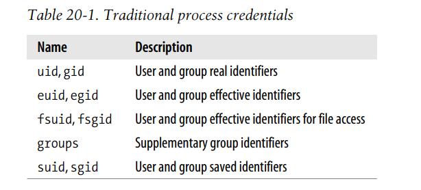
通常，uid,gid被称为的实际的进程身份。 euid,egid,fsuid,fsgid被称为有效的进程身份
root user的uid是0， root group的gid是0.
If a process credential stores a value of 0, the kernel bypasses the permission checks and allows the privileged process to perform various actions, such as those referring to system administration or hardware manipulation, that are not possible to unprivileged processes.
当一个进程被创建时，其身份继承自父进程。 然而， 这些身份后续也是可以被更改的，比如进程发起了相关的系统调用。 通常，uid,euid,fsuid,suid都是一样的。如果进程执行的可执行文件，其setuid标志被设置，则进程的euid,fsuid被设置为可执行文件的拥有者。 而suid为本来的euid. fsuid被用于file-related operations的检查， while euid is used for all other operations
Similar considerations apply to the gid, egid, fsgid, and sgid fields that refer to group identifiers.
举个例子，当一个用户要更改其密码，需要访问存储所有用户密码的文件，这个文件是被保护的，普通用户不能访问，只能通过调用/usr/bin/passwd程序，该可执行文件设置其setuid标志，其owner是root.
当shell fork 一个新的进程执行该程序时，其euid,fsuid都是0， Now the process can access the file, because, when the kernel performs the access control, it finds a 0 value in fsuid. Of course, the /usr/bin/passwd program does not allow the user to do anything but change his own password.
Unix 的悠久历史告诉我们，设置了 setuid 标志的程序是非常危险的：恶意用户可以利用代码中的漏洞来强制 setuid 程序执行原本并不计划执行的操作。最坏的情况下，整个系统的安全都可能会被破坏。为了最小化这种风险，Linux 和所有现代 Unix 系统一样，允许进程仅在必要时获取特权，并在不再需要时放弃这些特权。这个特性在实现带有多个保护级别的用户应用程序时可能会很有用。进程描述符包括一个 suid 字段，它存储了在 setuid 程序启动时euid的值。
进程可以通过 setuid()、setresuid()、setfsuid() 和 setreuid() 系统调用来更改有效标识符。A group’s effective credentials can be changed by issuing the corresponding setgid( ), setresgid( ), setfsgid( ), and setregid( ) system calls.
下表显示了这些系统调用如何影响进程的身份。请注意，如果调用进程没有超级用户特权，即它的euid字段不为0，则这些系统调用只能用于设置已包含在进程身份字段中的值。例如，普通用户进程可以通过调用setfsuid（）系统调用将值500存储到其fsuid字段中，但前提是其他身份字段之一已经包含相同的值。
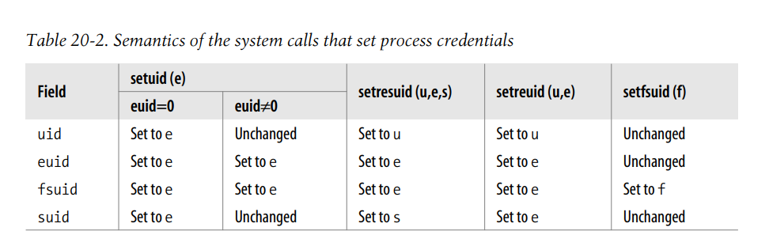
为了理解这些uid字段的关系，请考虑一下setuid（）系统调用的影响。具体操作取决于调用进程的euid字段是否设置为0（即进程具有超级用户特权）或普通UID。
如果euid字段为0，则系统调用将调用进程的所有身份字段(uid、euid、fsuid和suid)设置为参数e的值。因此，超级用户进程可以放弃其特权并成为普通用户所有的进程。例如，当用户登录时，系统会使用超级用户特权fork一个新进程，但进程通过调用setuid（）系统调用放弃其特权，然后开始执行shell程序。
如果euid字段不为0，则setuid（）系统调用仅修改存储在euid和fsuid中的值，而将其他两个字段保持不变。 同时，因为euid不为0，也就是进程没有超级用户特权，则也就只能将euid,fsuid更改为已包含在进程身份字段中的值。
Process capabilities
已经被撤回的POSIX.1e草案引入了另一种基于“capabilities”概念的进程身份验证模型。Linux内核支持POSIX capabilities，尽管大多数Linux发行版并不使用它们。
capability是一个标志，它声明进程是否允许执行特定操作或特定类别的操作。这个模型不同于传统的“超级用户与普通用户”模型，其中进程可以根据其euid来do everything or do nothing。
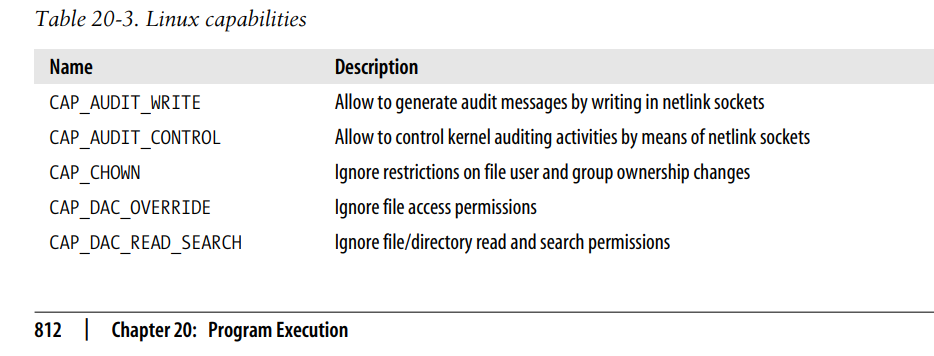
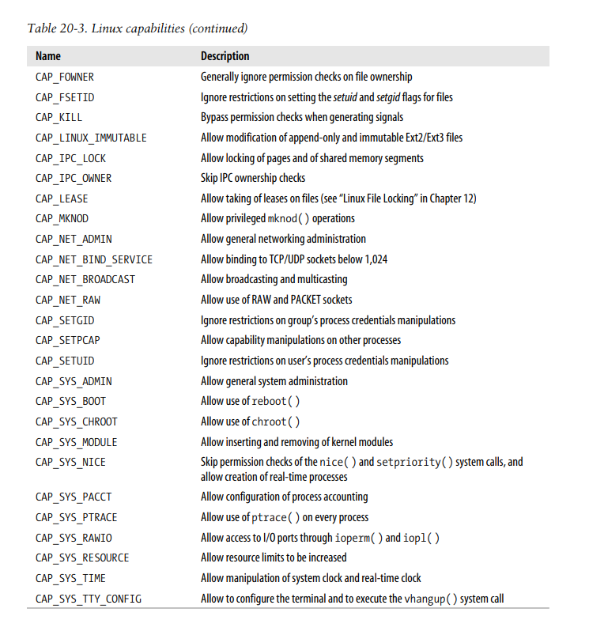
capabilities的主要优势在于，每个进程在任何时候都只需要一定的capabilities。因此，即使恶意用户发现了利用漏洞的方法，她也只能非法执行有限的操作。
例如，假设有一个有漏洞的进程只拥有 CAP_SYS_TIME 能力。在这种情况下，恶意用户只能非法更改real-time clock和the system clock。她将无法执行任何其他类型的操作。
目前，VFS（虚拟文件系统）和Ext2文件系统都不支持 capability model，so there is no way to associate an executable file with the set of capabilities that should be enforced when a process executes that file。尽管如此，一个进程可以通过使用 capget() 和 capset() 系统调用显式获取和降低其能力。
内核在代码中添加了一些“兼容性补丁”：每当一个进程将euid和fsuid字段设置为0（通过某个系统调用或执行设置了setuid标志，由超级用户拥有的可执行文件），内核就设置所有进程的能力，以便所有检查都将成功。当进程将euid和fsuid字段重置时，内核将检查进程描述符中的keep_capabilities标志，根据这个标志，删除相应的能力。进程可以通过Linux特定的prctl（）系统调用设置和重置keep_capabilities标志。
The Linux Security Modules framework
在Linux 2.6中，capabilities与Linux安全模块（Linux Security Modules，LSM）框架密切集成。
简而言之，LSM框架允许开发人员为内核安全定义多个替代模型。
每个安全模型由一组security hooks实现。security hook是内核在执行重要的与安全相关的操作时调用的函数。The hook function确定是否应执行或拒绝操作。
security hooks存储在类型为security_operations的表中。当前正在使用的安全模型的security hooks table的地址存储在security_ops变量中。默认情况下，内核使用dummy_security_ops表,该表中的每个security hook基本上检查相应capability是否拥有
例如，stime()和settimeofday()系统调用的处理函数在更改系统日期和时间之前调用settime安全挂钩。由dummy_security_ops表指向的相应函数仅检查当前进程是否设置了CAP_SYS_TIME能力，并相应地返回0或-EPERM。
更为复杂的linux kernel 安全模型已经被设计了。一个广为人知的例子是美国国家安全局开发的安全增强版Linux（SELinux，Security-Enhanced Linux ）。
Command-Line Arguments and Shell Environment
当用户键入命令：
$ ls -l /usr/bin
shell 进程会创建一个新进程来执行该命令。这个新进程会加载 /bin/ls 可执行文件。在此过程中，继承自 shell 的大部分execution context都会丢失，但是 ls、-l 和 /usr/bin 这三个单独的参数会被保留。一般来说，新进程可以接收任意数量的参数。
传递命令行参数的约定取决于所使用的高级语言。在 C 语言中，程序的 main() 函数可以接收一个整数参数，指定传递给程序的参数数量，以及一个指向字符串指针数组的地址。以下原型规范化了这个标准：
int main(int argc, char *argv[])
回到之前的例子，当调用 /bin/ls 程序时，argc 的值为 3，argv[0] 指向 ls 字符串，argv[1] 指向 -l 字符串，而 argv[2] 指向 /usr/bin 字符串。argv 数组的末尾始终由空指针标记，因此 argv[3] 包含NULL。
在 C 语言中传递给 main() 函数的第三个可选参数是包含环境变量的参数。
要使用环境变量，main() 可以声明如下：
int main(int argc, char *argv[], char *envp[])
envp中包含的指针指向形如VAR_NAME=something字符串
其中，VAR_NAME 表示环境变量的名称，等号分隔符后面的子字符串表示分配给该变量的实际值。与 argv 数组一样，envp 数组的末尾也由空指针标记。
命令行参数和环境字符串都被放置在user mode stack上，如图
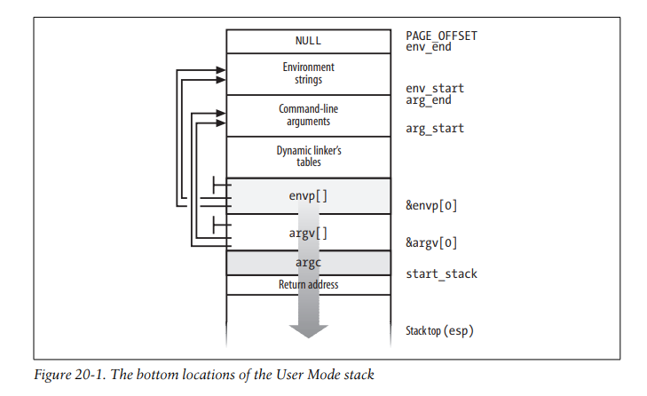
Libraries
每个高级语言的源代码文件都会通过几个步骤转换为一个目标文件，其中包含与高级指令相对应的机器指令。目标文件无法执行，因为它不包含与全局符号相对应的线性地址，这些全局符号来自于源代码文件之外的库函数或程序的其他源代码文件。这些地址的解析由链接器完成，它会收集程序的所有目标文件并构建可执行文件。链接器还会分析程序使用的库函数，并将它们粘合到可执行文件中。
大多数程序，即使是最简单的程序，也会使用库。例如，考虑下面这个只有一行代码的C程序：
void main(void) { }
尽管这个程序不会计算任何东西，但需要做很多工作来设置执行环境，并在程序终止时终止进程。特别是当 main() 函数终止时，C编译器会在目标代码中插入一个 exit_group() 函数调用
我们从第10章知道，程序通常通过C库中的包装函数调用系统调用。这对C编译器也适用。除了包含编译程序语句直接生成的代码之外，每个可执行文件还包括一些“glue”代码来处理用户模式进程与内核的交互。这样的glue代码部分存储在C库中。
除了C库以外，Unix系统还包含许多其他函数库。一个通用的Linux系统通常有几百个库。比如，数学库libm包含了用于浮点运算的高级函数，而X11库libX11收集了X11窗口系统图形界面的基本低级函数。
传统的Unix系统中所有的可执行文件都是基于静态库的。这意味着由链接器产生的可执行文件不仅包含原始程序的代码，还包含程序引用的库函数的代码。静态链接程序的一个很大的缺点是它们占用了大量磁盘空间。
现代的Unix系统使用共享库。可执行文件不包含库代码，而只包含对库名称的引用。当程序被加载到内存中准备执行时，一个称为动态链接器（也称为ld.so）的程序会负责分析可执行文件中的库名称，找到库的位置并making the requested code available to the executing process。这通常是通过内存映射是实现的。进程还可以使用dlopen()库函数在运行时加载其他共享库。
共享库在提供file memory mapping的系统上特别方便，因为它可以减少所需内存。当动态链接器必须将共享库链接到一个进程时，它不会复制对象代码，而是仅将相关部分的库文件memory mapping到进程的地址空间中。这使得包含库代码的page frames可以在多个进程之间共享。
共享库也有一些缺点。动态链接程序的启动时间通常比静态链接程序长。此外，动态链接程序不如静态链接程序具有可移植性，因为它们可能无法在包含不同版本的库的系统中正确执行。
用户始终可以要求将程序静态链接。例如，GCC编译器提供了-static选项，它告诉链接器使用静态库而不是共享库。
Program Segments and Process Memory Regions
Unix程序的线性地址空间从逻辑角度来看，传统上被分成几个线性地址间隔，称为段(“段”这个词具有历史渊源，因为最初的Unix系统使用不同的段寄存器实现了每个线性地址间隔。然而，Linux并不依赖于80x86微处理器的分段机制。这里我们说的“段”并不是指80x86处理器提供的分段机制)
- Text segment 包括程序的可执行代码；
- Initialized data segment 包含初始化的数据，即静态变量和全局变量的初始值存储在可执行文件中（因为程序必须在启动时知道它们的值）；
- Uninitialized data segment (bss,block started by symbol) 包含未初始化的数据，即所有全局变量和静态变量的初始值未存储在可执行文件中，这些变量在程序启动之前会被0初始化；历史上被称为bss段；
- Stack segment
每个mm_struct memory descriptor 都包括一些字段，用于标识相应进程的一些关键memory regions：
- start_code，end_code 可执行文件代码段对应的memory region的起始地址和结束地址
- start_data，end_data 可执行文件已初始化数据对应的memory regions的起始地址和结束地址
- start_brk，brk 存储进程动态分配的memory region的初始和最终线性地址.此内存区域有时被称为堆。
- start_stack 存储在main()返回地址上方的地址
- arg_start, arg_end Store the initial and final addresses of the stack portion containing the command-line arguments.
- env_start, env_end Store the initial and final addresses of the stack portion containing the environment strings.
Flexible memory region layout
The flexible memory region layout has been introduced in the kernel version 2.6.9: essentially, each process gets a memory layout that depends on how much the User Mode stack is expected to grow. However, the old, classical layout can still be used (mainly when the kernel cannot put a limit on the size of the User Mode stack of a process). Both layouts are described in Table 20-4, assuming the 80x86 architecture with the default User Mode address space spanning up to 3 GB.
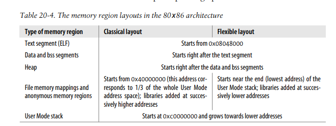
正如你所看到的，这些布局仅在file memory mappings and anonymous mappings的memory regions位置上有所不同。在经典布局中，这些区域从0x40000000,1/3 用户地址空间处开始；newer regions are added at higher linear addresses, thus the regions expand towards the User Mode stack.
相反，在灵活布局中，file memory mappings and anonymous mappings的memory regions放置在user mode stack的末尾附近；新的memory regions添加在更低的线性地址处，因此这些regions向堆扩展
The kernel typically uses the flexible layout when it can get a limit on the size of the User Mode stack by means of the RLIMIT_STACK resource limit (see the section “Process Resource Limits” in Chapter 3). This limit determines the size of the linear address space reserved for the stack; however, this size cannot be smaller than 128 MB or larger than 2.5 GB.
另一方面，如果将RLIMIT_STACK资源限制设置为“infinity”，或者系统管理员将sysctl_legacy_va_layout变量设置为1（通过写/proc/sys/vm/legacy_va_layout文件或通过适当的sysctl（）系统调用），内核无法确定User Mode stack的上限，因此它会坚持使用经典的内存区域布局。
为什么要引入灵活布局？其主要优点在于允许进程更好地利用用户地址空间。在经典布局中，堆的大小受限于1 GB，而其他内存区域可以填满约2 GB（减去栈大小）。在灵活布局中，这些限制被消除了：堆和其他内存区域都可以自由扩展，直到地址空间被耗尽
举个栗子，c程序如下
#include <stdio.h>
#include <stdlib.h>
#include <unistd.h>
int main()
{
char cmd[32];
brk((void *)0x8051000);
sprintf(cmd, "cat /proc/self/maps");
system(cmd);
return 0;
}
这个程序将brk拓展到0x8051000，然后读取该进程自己的内存映射文件
Let’s run the program without putting any limit on the stack size:
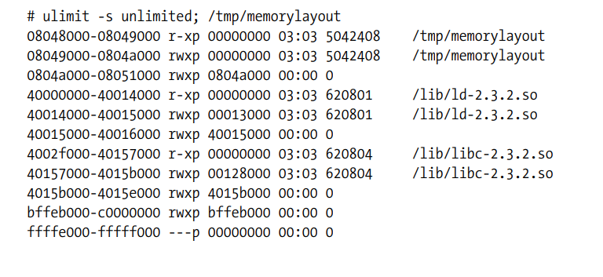
你可能会看到略有不同的结果，这取决于C编译器套件的版本以及程序链接的方式。前两个十六进制数字表示内存区域的范围；接下来是权限标志；最后，如果该内存区域是文件映射的，会有一些关于文件的信息：文件中的起始偏移量、块设备号和inode号，以及文件名。
请注意，所有列出的区域都是通过 private memory mappings实现的（权限列中的字母为p）。这并不奇怪，because these memory regions exist only to provide data to a process.在执行指令时，进程可能会修改这些内存区域的内容；比如可执行文件的数据段的映射，但是，与其关联的磁盘上的可执行文件保持不变。这正是私有内存映射的工作原理
从0x8048000开始的内存区域是与/tmp/memorylayout文件的0到4,095字节部分相关联的内存映射。权限指定该区域可执行（它包含目标代码）、只读和私有。这是正确的，因为该区域映射了程序的text segment。
从0x8049000开始的内存区域是与/tmp/memorylayout文件的0到4,095字节部分相关联的另一个内存映射。这个程序非常小，以至于程序的文本、数据都包含在同一个file’s page中。因此，包含数据的内存区域对应的文件部分与之前的一样
第三个内存区域包含进程的堆。请注意，终止在 0x8051000 处
从0x40000000和0x40014000开始的两个内存区域分别对应于动态链接器的text segment和 data segments（在此系统上是/lib/ld-2.3.2.so）
在此系统上，C库恰好存储在/lib/libc-2.3.2.so文件中。C库的text segment 和the data segments 映射到从地址0x4002f000开始的两个内存区域中。Remember that page frames included in private regions can be shared among several processes , as long as they are not modified.因此，由于text segment是只读的，包含C库可执行代码的page frames在几乎所有当前正在执行的进程（除了静态链接的进程）之间共享。
从0xbffeb000到0xc0000000的anonymous memory region与User Mode stack相关联。我们已经在第9章“页面故障异常处理程序”中解释了每当需要时栈如何自动向较低地址扩展。
Now let’s run the same program by enforcing a limit on the size of the User Mode stack:
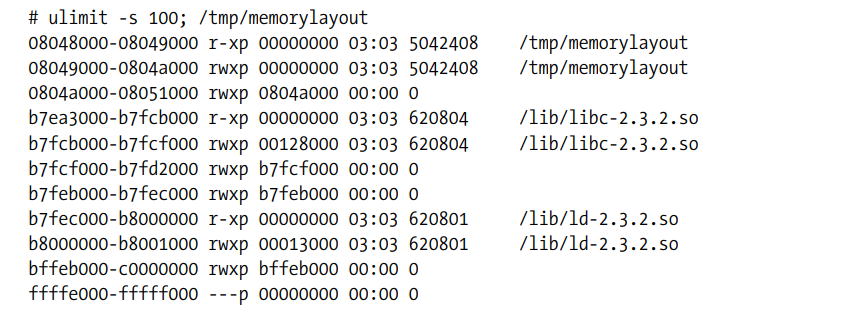
Notice how the layout has changed: the dynamic linker has been mapped about 128 MB below the lowest stack address. Furthermore, because the memory regions of the C library have been created later, they get lower linear addresses.
经典的memory region layout
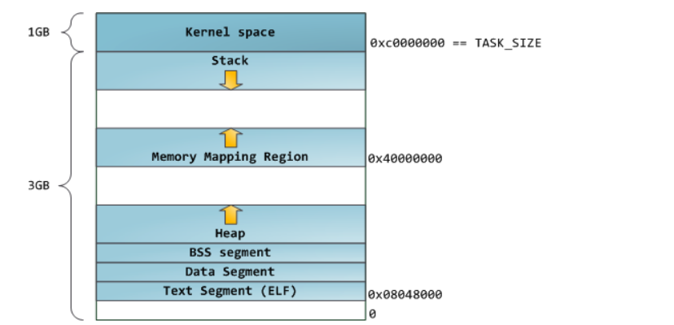
灵活的memory region layout
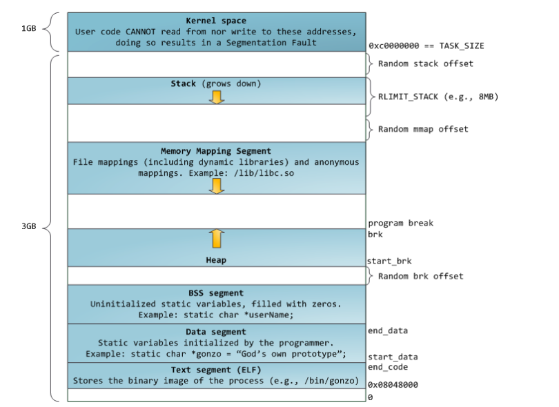
如果是64位，使用经典的内存布局。因为64位地址空间足够大，不存在heap大小受限的情况
Execution Tracing
tracing允许一个进程监控另一个进程的执行。被追踪的进程可以单步执行，直到收到一个信号或者调用一个系统调用为止。执行追踪被调试器广泛使用，与其他技术如在被调试程序中插入断点和runtime access to its variables一起使用。我们的重点是内核如何支持执行追踪，而不是讨论调试器的工作原理。
在Linux中，通过ptrace（）系统调用执行执行追踪，该系统调用可以处理表20-5中列出的命令。具有CAP_SYS_PTRACE权限的进程可以跟踪系统中除init之外的所有进程。相反，没有CAP_SYS_PTRACE权限的进程P只能跟踪具有与P相同所有者的进程。此外，一个进程不能同时被两个进程跟踪。
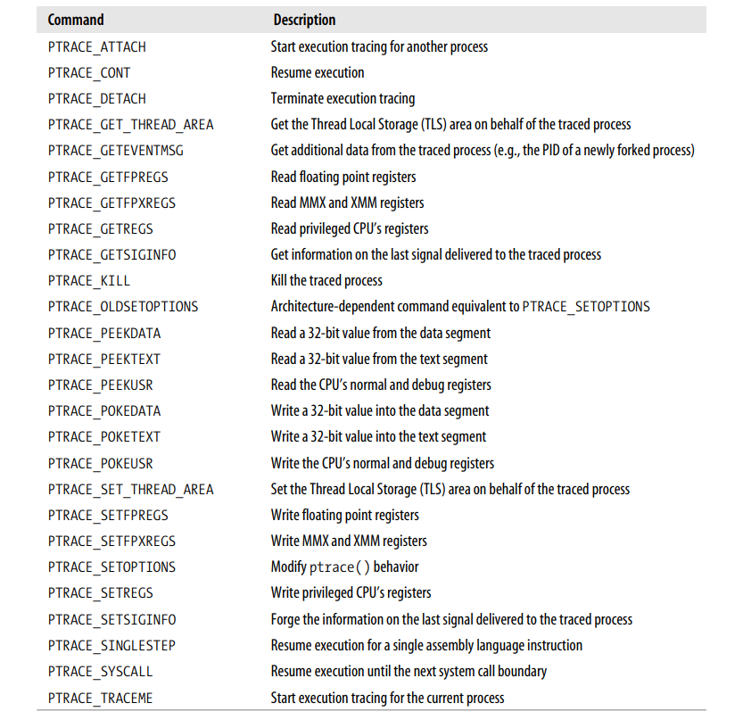
ptrace（）系统调用修改被追踪进程描述符中的parent字段，使其指向跟踪进程；因此，跟踪进程成为被跟踪进程的有效父进程。当执行追踪终止时，即当使用PTRACE_DETACH命令调用ptrace（）时，系统调用将p_pptr设置为real_parent的值，从而恢复被跟踪进程的原始父进程
Several monitored events can be associated with a traced program:
- End of execution of a single assembly language instruction
- Entering a system call
- Exiting from a system call
- Receiving a signal
When a monitored event occurs, the traced program is stopped and a SIGCHLD signal is sent to its parent. When the parent wishes to resume the child’s execution, it can use one of the PTRACE_CONT, PTRACE_SINGLESTEP, and PTRACE_SYSCALL commands, depending on the kind of event it wants to monitor
PTRACE_CONT命令仅仅是恢复执行；子进程执行直到它接收到另一个信号。这种追踪是通过进程描述符的ptrace字段中的PT_PTRACED标志实现的，该标志由do_signal（）函数检查，如果该标志被设置了，子进程停止并给父进程发送SIGCHLD信号
PTRACE_SINGLESTEP命令强制子进程执行下一条汇编语言指令，然后再次停止。在基于80x86的机器上，通过eflags寄存器中的TF trap flag 实现这种追踪：当该标志被设置时，每个汇编语言指令执行后都会触发“Debug”异常。相应的异常处理程序只清除标志，强制当前进程停止，并向其父进程发送SIGCHLD信号。
The PTRACE_SYSCALL command causes the traced process to resume execution until a system call is invoked. The process is stopped twice: the first time when the system call starts and the second time when the system call terminates. This kind of tracing is implemented by means of the TIF_SYSCALL_TRACE flag included in the flags field of the thread_info structure of the process, which is checked in the system_call( ) assembly language function
一个进程也可以使用Intel Pentium处理器的一些调试功能进行跟踪。例如，父进程可以使用PTRACE_POKEUSR命令为子进程设置dr0、...、dr7调试寄存器的值。当由调试寄存器监视的事件发生时，CPU会引发“Debug”异常；异常处理程序随后可以暂停跟踪的进程并向其父进程发送SIGCHLD信号。
Executable Formats
标准的Linux可执行文件格式为“Executable and Linking Format”（简称ELF）。它由Unix System Laboratories开发，现在是Unix世界中最广泛使用的格式。一些知名的Unix操作系统，如System V Release 4和Sun的Solaris 2，已经采用ELF作为它们的主要可执行文件格式。
旧版Linux支持另一种格式名为“ Assembler Output” Fromat（简称a.out）；实际上，在Unix世界中流传着几个版本的该格式。由于ELF更加实用，因此现在很少使用a.out格式。
Linux支持许多其他不同的可执行文件格式；这样，它可以运行为其他操作系统编译的程序，例如MS-DOS EXE程序或BSD Unix的COFF可执行文件。一些可执行文件格式，例如Java或bash脚本，是跨平台的。
An executable format is described by an object of type linux_binfmt, which essentially provides three methods:
- load_binary 通过读取可执行文件中存储的信息，为当前进程设置新的执行环境。
- load_shlib 动态绑定共享库到已经运行的进程中；
- core_dump 将当前进程的执行上下文存储在名为core的文件中。该文件的格式取决于正在执行的进程的可执行文件类型，通常在进程接收到默认操作为“转储”的信号时创建。
所有linux_binfmt对象都包含在一个单链表中，并且第一个元素的地址存储在formats变量中。通过调用register_binfmt()和unregister_binfmt()函数，可以在列表中插入和删除元素。对于编译到内核中的每个可执行文件格式，register_binfmt()函数在系统启动期间执行。当加载实现新可执行文件格式的模块时，也会执行此函数，而unregister_binfmt()函数在模块被卸载时被调用。
The last element in the formats list is always an object describing the executable format for scripts. 此格式仅定义load_binary方法，检查可执行文件是否以#!字符对开头。If so, it interprets the rest of the first line as the pathname of another executable file and tries to execute it by passing the name of the script file as a parameter.
即使脚本文件不以#!字符开头，只要文件是使用当前shell识别的语言编写的，也可以执行该脚本文件。但在这种情况下，该脚本文件将由当前的shell或默认的Bourne shell sh解释，因此内核不直接涉及。
Linux允许用户注册自己的自定义可执行文件格式。每个这样文件的格式可以通过存储在文件的前128个字节中的魔数或标识文件类型的文件名扩展名来识别。例如，MS-DOS扩展名由三个字符组成，由点与文件名分隔：.exe扩展名标识可执行程序，而.bat扩展名标识shell脚本。
当内核确定可执行文件具有自定义格式时，它会启动相应的interpreter program。interpreter program在用户模式下运行，以可执行文件的路径名作为其参数，并继续执行计算。例如，包含Java程序的可执行文件由类似于/usr/lib/java/bin/java的Java虚拟机处理。
这种机制与脚本格式类似，但更加强大，因为它不对自定义格式施加任何限制。要注册新格式，用户需要向binfmt_misc特殊文件系统的register文件中写入一个具有以下格式的字符串（通常挂载在/proc/sys/fs/binfmt_misc上）：
:name:type:offset:string:mask:interpreter:flags
where each field has the following meaning:
- name An identifier for the new format
- type The type of recognition (M for magic number, E for extension)
- offset The starting offset of the magic number inside the file
- string The byte sequence to be matched either in the magic number or in the extension
- mask The string to mask out some bits in string
- interpreter The full pathname of the interpreter program
- flags some optional flags that control how the interpreter program has to be invoked
For example, the following command performed by the superuser enables the kernel to recognize the Microsoft Windows executable format:
$ echo ':DOSWin:M:0:MZ:0xff:/usr/bin/wine:'
> /proc/sys/fs/binfmt_misc/register
A Windows executable file has the MZ magic number in the first two bytes, and it is executed by the /usr/bin/wine interpreter program